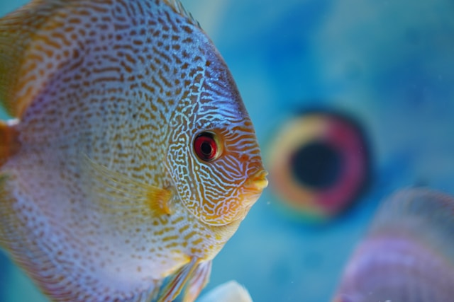

Fish Care
Having a fish tank can have calming effects, but it's important to ensure the environment is safe for your fish. Regular water testing is essential to maintain a toxin-free environment. Below are some tips for keeping your fish healthy and happy.
Top Pet Care Tips for Fish
- Water Testing: Invest in a water testing kit and perform weekly chemical tests on tank water.
- Chemical Range: Understand the specific chemical range requirements for freshwater versus saltwater fish.
- Compatibility: Consult with a "Pexpert" to ensure compatibility among fish in your tank.
- External Resources: Access external resources for more information on making tap water safe for fish.
Freshwater Fish
For freshwater fish, it's important to maintain general water chemistry within specific parameters. Ideal pH levels should be monitored, and harmful substances like ammonia, nitrates, and nitrites should be kept within safe limits.
Saltwater Fish
Saltwater fish require specific salinity levels and pH balances to thrive. Managing ammonia, nitrates, and nitrites is also critical to prevent dangerous conditions in a saltwater tank. Regular monitoring is essential to maintain a healthy environment.